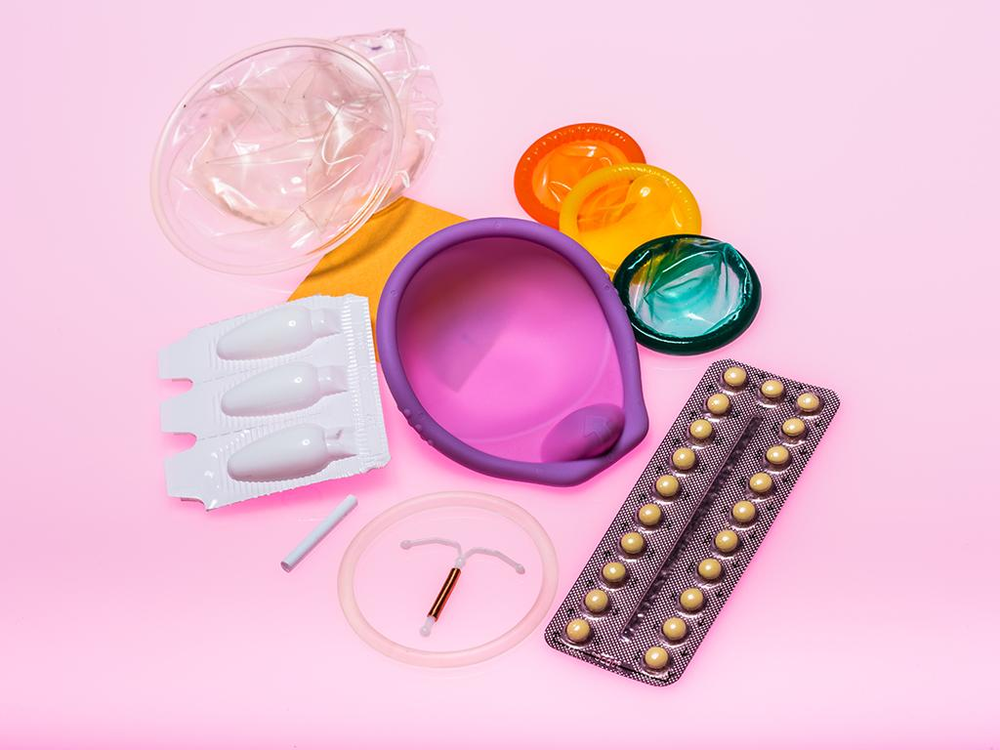

Educating and empowering teen girls
Frankly, Inc
Date
December 2015
Project Details
UI/UX + Environmental Design + Branding
Team
Morgan McDonnell + Dajana Nedic
[1] Origin Story
The three founders of Frankly, Inc. were drawn together by a singular patriarchal dissatisfaction and a passionate fervor for disrupting the status quo. We acknowledge that feminism is a charged topic that many people have misunderstandings about. We wanted to create an organization based on these feminist ideals while distancing ourselves from any preconceived labels and stereotypes, creating our own identity. Our focused definition of feminism is centered around the ability for women to feel empowered in their choices and for those choices to be active rather than circumstantial.
- 
Reflecting on our own personal experiences and those of the women and girls in our lives, we saw that empowerment is primarily rooted in knowledge and understanding. From there, we meditated on important aspects of womanhood that tend to lack this fundamental knowledge. In that regard, and in the wake of recent attacks on organizations such as Planned Parenthood, it became apparent that the issue of reproductive health was unable to be ignored.
Empowerment can take many forms and can mean something different to each person.
We can empower other women by acknowledging their autonomy, encouraging their own self-determination and celebrating all that it means to be a woman.
[2] Smells like Teen Spirit
why why why
One of the most frequent questions surrounding sexual education is about timing. When is the right time to begin learning about sexual and reproductive health? At Frankly, Inc we believe there is no time too soon to begin those conversations, but that ultimately teenagers are the ones who need it the most.